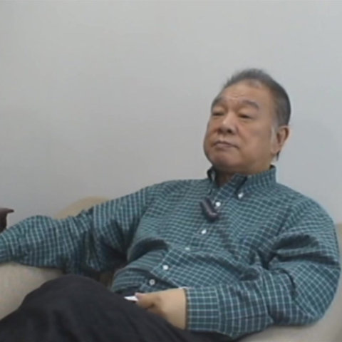
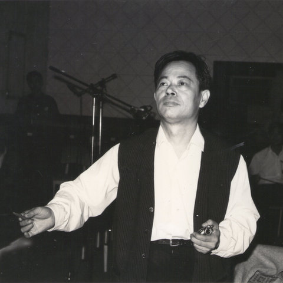
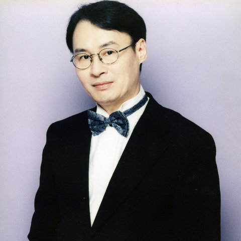
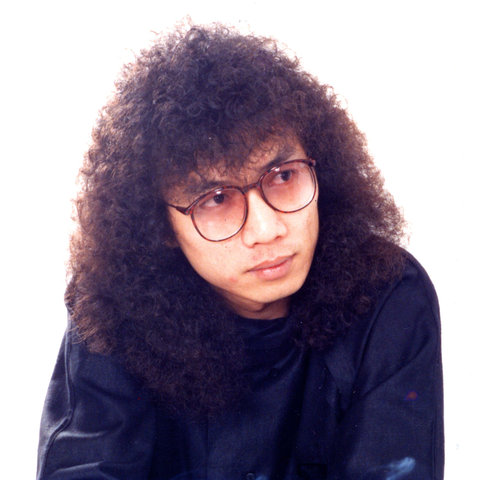
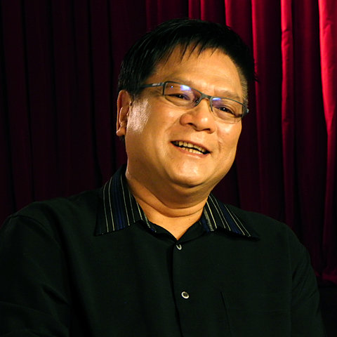
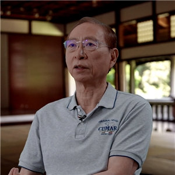
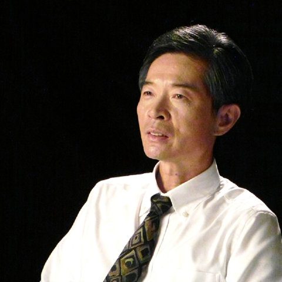
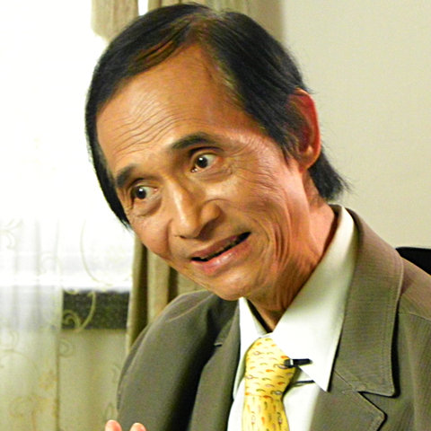
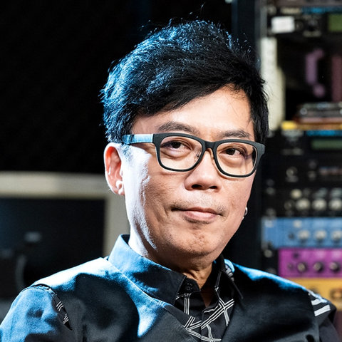

The network has 3,688 nodes. These thirteen are the ones the paper, the poster and the Historical Context page talk about.
The paper anonymizes individual nodes (Arr. #1, Eng. #2) except for Chen Chih-Yuan 陳志遠. The poster adds portraits for the people who also appear in the Taipei Music Center's oral-history archive. Here they are named, grouped by the four arrangement traditions of Figure 3, with a short biography, their position in our analysis, and a link to their profile and filmed interview at the Taiwan Popular Music Database. Two of the thirteen have no profile in the database and are shown without a portrait.
Names are romanized in the style conventional in Taiwan (surname first); English stage names, where they exist, are given alongside. Biographies are paraphrased from the database and from the first author's dissertation, not copied.

Weng Ching-hsi 翁清溪 (Tony Weng)
1936–2012 · composer, arranger, big-band leader
Known professionally as Tony, Weng was a Taipei-born, largely self-taught multi-instrumentalist who absorbed jazz from the nightclub circuit and formed the Tony Big Band in 1962. He went on to lead the house big bands of the CTS and TTV television networks, studied jazz and film scoring in Southern California in 1973, and wrote standards such as "The Moon Represents My Heart" and "Small Town Story" for Teresa Teng. He received the Golden Melody Special Contribution Award in 1999.
Anchor of the Pre-multitrack tradition in Fig. 3; a big-band arranger of the pre-1978 network (see Historical Context, Sections 1 and 6).
Profile at Taiwan Popular Music Database →

Chou Lan-ping 周藍萍
1925–1971 · composer, film composer
Born in Hunan and trained in voice at the National Conservatory, Chou settled in Taiwan in 1949 and joined the Broadcasting Corporation of China as choir conductor, tenor and staff composer. His 1954 song "Green Island Serenade" became a standard. From 1963 he scored films for Shaw Brothers in Hong Kong, beginning with the Huangmei opera film "The Love Eterne", and won three Golden Horse Awards for best music before dying at 46 while scoring a film.
Mainland-born composer of the first period; one reference point for the pre-multitrack sound (Historical Context, Section 1).
Profile at Taiwan Popular Music Database →
Lin Li-han 林禮涵
1912–1979 · arranger, pianist, big-band leader
A native of Wanhua in Taipei, Lin was a rare jazz pianist and violinist in the Taiwanese scene of his day, playing at the US military clubs and the Broadcasting Corporation of China, and had already worked for Victor Records under Japanese rule. After the war he settled in Sanchong and arranged for virtually every label, including Hung Yi-feng's "Old Love Lingers" and Wu Chin-huai's Asia Records series, deciding the orchestration alone and conducting the band in single-take sessions.
The single arranger of the pre-multitrack period: where early records name an arranger at all, it is almost always Lin (Historical Context, Section 1).

Chen Chih-Yuan 陳志遠
1950–2011 · arranger, composer, producer
Born in Taoyuan, Chen left school after junior high to play keyboards, passing through Su Rui's band and Weng Ching-hsi's Tony Big Band, where Weng steered him toward session and arranging work. His arrangements for the "Chinese Modern Folk Song" and Golden Rhythm Award albums from 1976 made him the central arranger of Mandarin pop in the 1980s; he later produced in-house for UFO Records and co-founded Forward Music in 1995. Golden Melody Special Contribution Award, 2008.
Arr. #1 in Fig. 2: the lowest Burt constraint in the whole 1957–1991 network, credited on 178 albums with 338 collaborators. His works spread across the entire MERT space (Fig. 3b).
Profile at Taiwan Popular Music Database →

Chen Yu-li 陳玉立
keyboardist, arranger, producer
Chen taught himself piano while working odd jobs at a dance hall as a teenager, and at twenty joined the house band of Taipei's Tsai Shen Hotel. He became a session pianist and arranger for Lee Tai-hsiang, Weng Ching-hsi and Chen Chih-yuan, often standing in for the latter on keyboards, and in 1984 turned producer at Li Ge and Pai Pu Records. His 1986 production of "How Many Sunsets" for Pan Yueh-yun became his signature.
Chen Chih-Yuan's protégé in the trade's loose sense: his keyboard stand-in, who took over some of his cases and whom studio insiders counted among the core session players; grouped with the Chen tradition in Fig. 3.
Profile at Taiwan Popular Music Database →

Huang Jui-feng 黃瑞豐 (Rich Huang)
b. 1950 · drummer, songwriter
Kaohsiung-born Huang took up drums at fourteen and, after turning professional in 1967, was house drummer at the CCK US air base club in Taichung before joining the TTV big band in 1973. From 1975 he became the most recorded session drummer in Taiwan, playing on film, television, advertising and record dates for arrangers across the industry, and from 1985 also wrote Taiwanese-language hits. Nicknamed the "drum king of Taiwan", he received the Golden Melody Special Contribution Award in 2020.
Drummer of the military-club cohort that appears as a separate cluster in the 1957–1978 snapshot (Fig. 2b); member of the rhythm-section “Gang of Four”.
Profile at Taiwan Popular Music Database →

Hsu Chung-hsien 徐崇憲
b. 1948 · recording engineer, studio founder
After military service Hsu joined Li Feng Records in Taipei in 1971 and was trained as an engineer by Yao Hou-sheng, cutting his first album for Liu Wen-cheng in 1972. When the label's owner left Taiwan in 1976 he bought the studio's equipment and ran it himself, formally as Kuan Yin, though the trade kept calling it Li Feng. Through the 1980s he engineered landmark albums such as "The Olive Tree", "Zhi Hu Zhe Ye" and "Blue Sky Every Day".
Engineer whose name appears on most LP credits of the early 1980s; one of the few engineers bridging the network before the role diffused (Table 1).
Profile at Taiwan Popular Music Database →

Yeh Chui-ching 葉垂青
b. 1952 · studio founder, disc-cutting engineer, recording engineer
Trained in engineering at Taipei Institute of Technology, Yeh entered the family's record-pressing business in 1976 and from 1977 operated Taiwan's only Neumann VMS-70 cutting lathe, mastering most of the island's LPs. Dissatisfied with the tapes he received, he founded Platinum Studio in 1980 with a Swiss-imported 24-track system, advised by Japanese engineer Hirata Giichi. He was founding chair of the AES Taiwan Section (2018) and received the Traditional Arts Golden Melody Special Award in 2019.
Founder of Platinum Studio, one of the recording studios at the centre of the 1957–1991 snapshot (Fig. 2c; Historical Context, Section 4).
Profile at Taiwan Popular Music Database →
Liu Ching-chih 劉清池
b. 1943 · arranger, Electone player, guitarist
A self-taught musician from Wanhua in Taipei, Liu entered the record business at 23 as a guitarist cutting instrumental albums for Ling Ling Records, then learned arranging inside Lin Li-han's studio band. From the 1980s he was the central arranger of Taiwanese-language pop, building a low-cost, Electone- and MIDI-driven sound for hits such as "Love to Fight Will Win", while his own easy-listening albums sold in enormous numbers. Golden Melody Special Contribution Award, 2024.
Anchor of the Electone tradition in Fig. 3; the dissertation's case study of the parallel Taiwanese-language path (Historical Context, Section 6).

Chi Ming-yang 紀明陽
b. 1950 · arranger, songwriter, producer
Born in Chiayi, Chi learned saxophone, trumpet and drums as a schoolboy and was already playing dance halls in junior high. After naval service and a spell in a trading company he joined a record label as a full-time songwriter and arranger, and over nearly four decades wrote and arranged for leading Taiwanese-language singers such as Huang Yi-ling, Hung Jung-hung, Chiang Hui and Yeh Chi-tien, several of whose albums broke sales records.
Electone-tradition arranger; the poster links the Electone region of the MERT panel to his node in the network.
Profile at Taiwan Popular Music Database →
Tu Ying 屠穎
1963–2025 · arranger, keyboardist, producer
A Taipei pianist who turned professional after high school, Tu joined Pai Pu Records in 1983 as a member of the band Blue Angels and began learning MIDI arranging there. In 1987 Weng Hsiao-liang brought him to Dian Jiang Records as a staff arranger; Huang Shu-chun's "Wild Geese Over Cold Waters" (1989) and a 1990 Golden Melody Award for arrangement made his name. He arranged over a thousand songs, including Faye Wong's "Sky".
Post-Chen era sample in Fig. 3; a MIDI-generation arranger who entered after the Chen model had closed (Historical Context, Section 6).
Profile at Taiwan Popular Music Database →
Huang Yun-ling 黃韻玲 (Kay Huang)
b. 1964 · singer-songwriter, arranger, producer
Raised in a musical family in Yilan, Huang won the 1979 Golden Rhythm Award with the vocal group Four Little Ones as a teenager and wrote the theme for the film "Growing Up" while at the National Academy of Arts. Her 1986 Rock Records debut "Sad Boy" stood out for its synthesizer-based arrangements. She founded the Friendly Dog label in 1992, won the 2013 Golden Melody Award for composition, and chaired the Taipei Music Center from 2020.
Post-Chen era sample in Fig. 3; singer-songwriter and arranger whose synthesizer-based records mark the late-1980s sound.
Profile at Taiwan Popular Music Database →

Tu Hui-yuan 凃惠源
keyboardist, arranger, composer
Tu grew up on piano and electronic organ and as a schoolboy accompanied the vocal group Four Little Ones at the 1979 Golden Rhythm Award. In the 1980s he played keyboards in the bands of Hsueh Yueh, Harlem Yu and Chyi Chin before turning to studio arranging; Pan Yueh-yun's "Am I the One You Love Most" (1989), which he arranged throughout, won the first Golden Melody best album award. He later wrote A-mei's "Cutting Love" and "Listen to the Sea".
Post-Chen era sample in Fig. 3; enters the top ten brokers of the 1987–1991 window as a supplier of new timbres and tools.
Profile at Taiwan Popular Music Database →
Portraits and biographical data: Taipei Music Center, Taiwan Popular Music Database (pmdb.taipei), “Oral History of Senior Musicians”. Reproduced here for non-commercial academic research under the database’s intellectual property statement; all rights remain with the Center and the rights holders. Biographies are paraphrased, not copied.
The paper's military-club cohort also includes the guitarist Yu Cheng-yen 游正彥 (b. 1952) and the bassist Kuo Tsung-shao 郭宗韶 (1950–2017), who with Huang Jui-feng and Chen Chih-Yuan formed the rhythm section known in the trade as the “Gang of Four” 四人幫; the engineer Hsu Chung-hsien's partner at Lifeng Studio, Wang Chia-tung 王家棟 (b. 1951); and the arranger Lin Kuo-hsiung 林國雄 of the Electone group. See Historical Context, Sections 3 to 6.